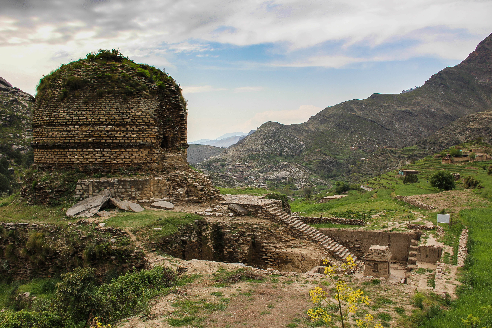

|
Mingora:
|
Mingora is the largest city in the Swat district of Khyber Pakhtunkhwa province in Pakistan. It is located in the picturesque Swat Valley, known for its natural beauty, lush green landscapes, and historical significance. Mingora serves as the administrative and commercial hub of the Swat district. The city of Mingora has a rich cultural and historical heritage. It has been inhabited for thousands of years and has witnessed the influence of various civilizations, including Buddhist, Hindu, and Muslim. Mingora was an important center of Buddhist civilization during the Gandhara period, and remnants of Buddhist stupas and monasteries can still be found in the surrounding areas. Mingora offers a range of attractions for visitors. One of the prominent landmarks is the Mingora Bazaar, a bustling market known for its vibrant atmosphere, traditional handicrafts, and local products. The bazaar is a great place to explore and experience the local culture and purchase souvenirs. The Swat Museum in Mingora is another noteworthy attraction. It houses a collection of Buddhist artifacts, Gandhara sculptures, and archaeological finds from the region, providing insights into the rich history and heritage of Swat. Mingora is also a gateway to various scenic spots in the Swat Valley. Nearby attractions include Malam Jabba, a popular ski resort, and Kalam Valley, known for its picturesque landscapes and pleasant weather. Visitors can enjoy activities like hiking, trekking, and sightseeing in these beautiful surroundings. The city has a range of accommodation options, including hotels and guesthouses, to cater to the needs of tourists. Local cuisine, including traditional Pashtun dishes, can be savored at restaurants and food stalls in Mingora. It's important to note that the security situation in the Swat Valley has significantly improved in recent years, making it a relatively safe and welcoming destination for tourists. However, it is always advisable to stay updated on the current situation and follow any travel advisories or guidelines issued by local authorities. |
 |